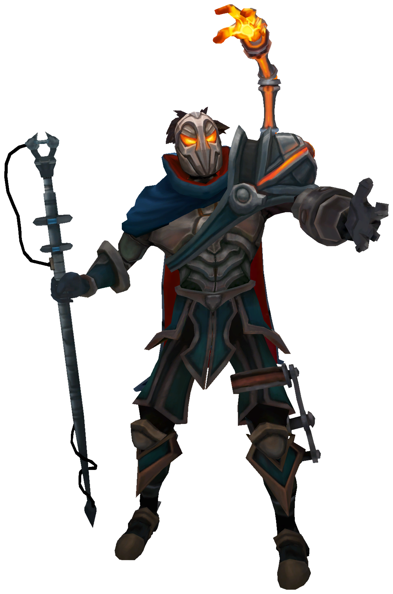
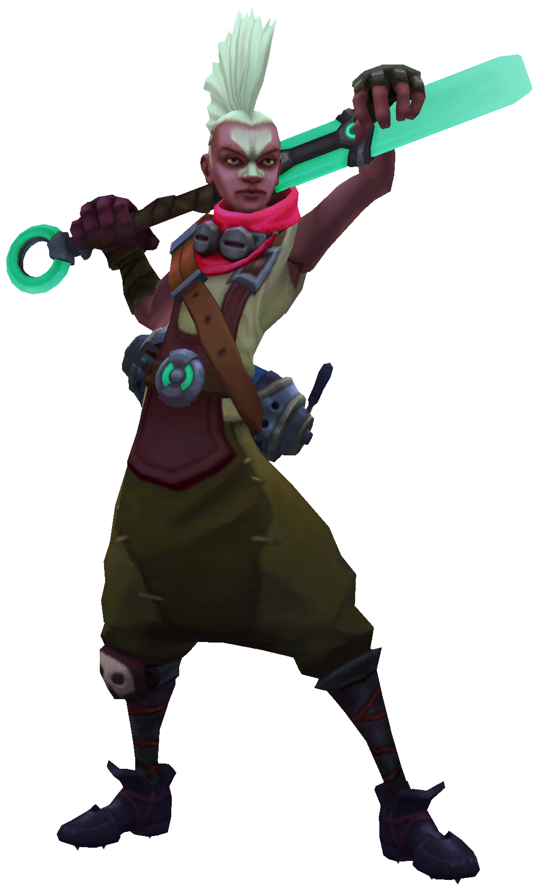

Jinx
A manic and impulsive character who lives to wreak havoc without care of the consequences. The arsenal of deadly weapons, she unleashes the loudest blasts and brightest explosions that leave a trail of mayhem and panic. Jinx despises boredom and gleefully brings her chaotic brand and pandemonium wherever she goes.
Jinx was an innocent girl from Zaun. No one knows for certain what happened to turn that sweet young child into a wildcard. She first gained notoriety through her anonyumous pranks that ranged from the moderately annoying to the criminally dangerous.
The wardens attributed some of her crimes to gangs from the undercity. Having others get credit for her manic schemes, Jinx made sure that her presence was made in every future crime scene. Soon, rumors started circulating of the blue haired Zaunite girl carring chemtech explosives, a shark mounted rocket launcher and a reaper gun.
Jinx reputation grew, leaving people of Zaun into ignorance whether she was a hero or a dangerous lunatic. One thing is certain, her crimes are continuing and growing in sheer audacity.
Viktor
The herald of new age of technology, Viktor has devoted his life to the advancement of humankind. An idealist who seeks to life the people of Zaun to a new level of understanding, he believes that only by embracing a glorious evolution of technology can humanity’s full potential be realized.
Viktor was born in Zaun on the borders of the Entersol level, encouraged by his Asian parents, discovered a passion for invention and building. He devoted every waking minute to his studies, hating to interrupt his work even to eat or sleep.
In a bid to impose a level of order and certainty on his world, Viktor researched Zaun’s many accidents and came to realize that almost all of them were the result of human error not mechanical failure. He offered his services to the local businesses developing inventions that made them far safer working environments.
Viktors inventions in automation reduced the number of accidents in the forge to zero within a month. Soon, other establishments sought his work and his designs became common in Zaun, improving production with every innovation that removed human error from a process.
Ekko
A prodigy from the rough streets of Zaun, Ekko manipulates time to twist any situation to his advantage. Using his own invention, the Z-Drive, he explores the branching possibilities of reality to craft the perfect moment. Though he revels in the freedom, when there’s a threat to his friends, he’ll do anything to defend them. He seems to achieve the impossible the first time, every time.
Born with a genius level intellect, Ekko constructed simple machines before he could crawl. His parents vowed to provide a good future for their son.. Throughout his youth he watched his parents age beyond their years. They reasoned it would all be worth it for their son to rise to the city above one day.

